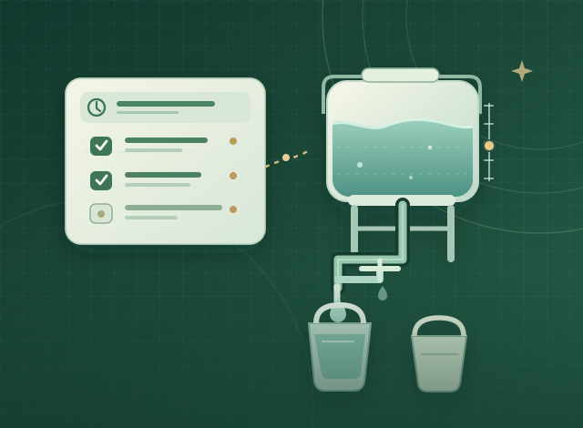
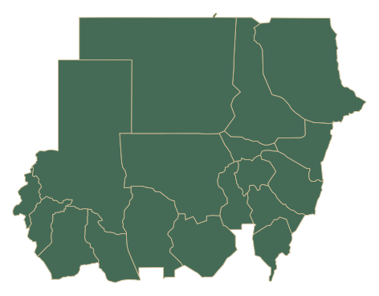

COMMUNITY PROJECT PLANNING
ProjectStarter. From idea to action.
A practical workspace for community-led projects. Clarify the need, build a budget, define roles, plan milestones and share a draft proposal.
Explore ProjectStarter →Explore practical ways to plan water needs, household electricity and local ideas in Sudan. Free tools, clear limitations, and no account required.

SIRAI / OUR IMPACT
Every person who tells us a SIRAI tool made a difference helps this tree grow.
Nine people have reported benefiting from SIRAI tools.
SUDAN IN NUMBERS 2026
Behind every figure is a person, a family, and a community. Explore three measures of Sudan's humanitarian crisis.
An estimated 33.7 million people across Sudan require humanitarian assistance in 2026.

INTERNALLY DISPLACED PEOPLE BY HOST STATE
Map: June 2026 IOM DTM state estimates. The main 8.58M figure is August 2026. View source data
HOW TO USE THE MAP
The silhouette locates Sudan. The 33.7 million figure applies to the country as a whole, not evenly across its states.
WaterShare is a simple, multilingual tool for planning shared water-collection schedules and estimating daily volumes. It draws inspiration from prior community experience, but it is a new SIRAI tool, not a claim that SIRAI has already delivered a field project.
Open WaterShare toolkitA practical workspace for community-led projects. Clarify the need, build a budget, define roles, plan milestones and share a draft proposal.
Explore ProjectStarter →A free household electricity toolkit for understanding appliance consumption, planning essential battery backup and exploring preliminary solar scenarios.